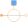

SourcesSources to supply magnetic networks |
|
Package Contents
|
ConstantMagneticPotentialDifference Source with constant magnetic potential difference |
|
|  |
SignalMagneticPotentialDifference Source of magnetic potential difference with signal input |
|
Source of constant magnetic flux |
|
|  |
Source of time varying magnetic flux |